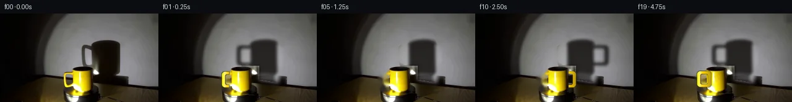

![首帧]()

Round 00
2026-11-05T00:47:03.501111+00:00像素候选变化代码 +286/−0inspection 更新
pixels dafb592569d4055b · code a03366d33b582673
查看本轮 generate.py 真实 diff
--- previous/generate.py +++ current/generate.py @@ -0,0 +1,286 @@ +#!/usr/bin/env python3 +"""Generate a 20-frame, image-based turntable animation. + +The source photograph is retained as the scene plate. The original handle and +wall shadow are locally reconstructed, then a geometrically projected handle, +soft wall shadow, and small rotating platform cues are composited with OpenCV +and NumPy. There is no 3-D renderer or generated imagery involved. +""" + +from pathlib import Path +import math + +import cv2 +import numpy as np +from PIL import Image, ImageDraw + +import artifact_io + + +ROOT = Path(__file__).resolve().parent +W, H = 256, 144 + + +def wall_boundary(x): + """Measured table/wall boundary as a piecewise-linear curve.""" + return np.interp(x, [0, 71, 157, 255], [122, 101, 106, 123]) + + +def poly_features(x, y): + """Low-order smooth illumination model for the spotlight on the wall.""" + x = (x - 136.0) / 110.0 + y = (y - 65.0) / 80.0 + return np.stack( + [np.ones_like(x), x, y, x*x, x*y, y*y, + x*x*x, x*x*y, x*y*y, y*y*y], axis=-1 + ) + + +def fit_clean_wall(src): + yy, xx = np.mgrid[0:H, 0:W] + wall = yy < wall_boundary(xx) + # Omit the photographed shadow, physical setup, and nearly-black edge. + blocked_shadow = (((xx - 169) / 45.0) ** 2 + ((yy - 72) / 50.0) ** 2 < 1.0) + blocked_setup = (xx > 98) & (xx < 164) & (yy > 83) + samples = wall & ~blocked_shadow & ~blocked_setup & (xx > 28) & (xx < 244) + A = poly_features(xx[samples], yy[samples]) + model = np.empty_like(src, dtype=np.float32) + F = poly_features(xx, yy) + for c in range(3): + coef, *_ = np.linalg.lstsq(A, src[..., c][samples].astype(np.float32), rcond=None) + model[..., c] = F @ coef + + # Carry tiny photographic texture into the reconstructed portion. + low = cv2.GaussianBlur(src.astype(np.float32), (0, 0), 2.2) + residual = src.astype(np.float32) - low + mirror_x = np.clip(250 - xx, 0, W - 1) + model += residual[yy, mirror_x] * 0.45 + return np.clip(model, 0, 255) + + +def rounded_rect_mask(shape, box, radius, supersample=4): + """Anti-aliased rounded rectangle mask.""" + h, w = shape + s = supersample + canvas = np.zeros((h*s, w*s), np.uint8) + x0, y0, x1, y1 = [int(round(v*s)) for v in box] + r = max(1, int(round(radius*s))) + cv2.rectangle(canvas, (x0+r, y0), (x1-r, y1), 255, -1) + cv2.rectangle(canvas, (x0, y0+r), (x1, y1-r), 255, -1) + for x, y in [(x0+r, y0+r), (x1-r, y0+r), + (x0+r, y1-r), (x1-r, y1-r)]: + cv2.circle(canvas, (x, y), r, 255, -1, cv2.LINE_AA) + return cv2.resize(canvas, (w, h), interpolation=cv2.INTER_AREA).astype(np.float32) / 255.0 + + +def make_mug_mask(): + """Approximate visible body/rim used for rear-handle occlusion.""" + m = np.zeros((H, W), np.uint8) + cv2.ellipse(m, (132, 94), (17, 7), 0, 0, 360, 255, -1, cv2.LINE_AA) + cv2.rectangle(m, (114, 94), (150, 122), 255, -1) + cv2.ellipse(m, (132, 122), (18, 8), 0, 0, 180, 255, -1, cv2.LINE_AA) + return cv2.GaussianBlur(m, (3, 3), 0.45).astype(np.float32) / 255.0 + + +def reconstruct_plate(src): + """Remove the initial handle and large wall shadow while retaining the photo.""" + clean = src.astype(np.float32).copy() … diff truncated; 199 more lines …